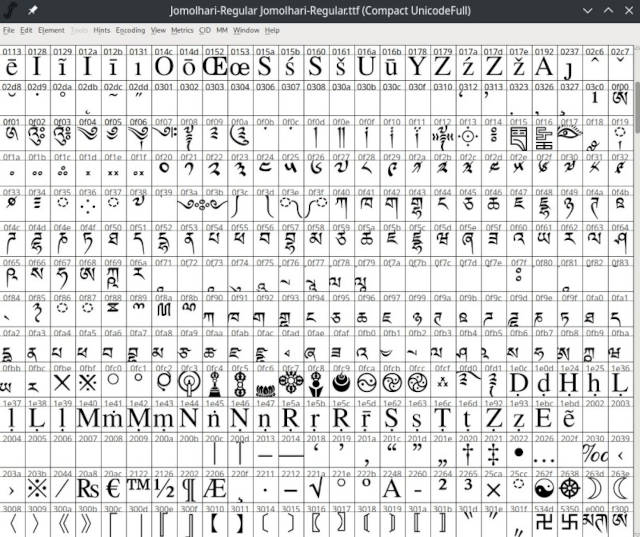

Editing and creating Tibetan fonts
Contents
Editing and creating Tibetan fonts¶
INCOMPLETE DRAFT
Indic scripts and Tibetan create stacks by using the OpenType feature ‘Below base substitution ligatures’ (blws). The font contains the image of a Tibetan stack (‘a glyph’) together with a definition which letters do compose this stack. A Unicode font would for example contain an image of the glyph rgyu, རྒྱུ together with a ligature definition how this glyph is composed of single letters. A very good description how to encode Unicode stacks can be found at THLib.
Using FontForge to create Tibetan fonts¶
{kind=link}
FontForge is a powerful free and open font editor that can be used to extend existing Tibetan fonts or create new ones.
Editing Tibetan fonts and creating Sanskrit stacks for existing fonts¶
To convert an existing Tibetan font, load the font into FontForge and create a new empty font. Use the THDL Tibetan Machine Uni font as an example if you in doubt about settings. Name your font using “Element / font info”.
Standard range Tibetan 0x0f00 - 0x0fff Get a definition of the Tibetan Unicode font range (characters 0x0F00 to 0x0FFF) and copy the standard characters from your existing font into the standard range. You can simply load Tibetan Machine Uni into FontForge and take this as reference to see which character is expected where in the range of 0x0f00 to 0x0fff. Note that only a few stacks are within the standard range. Stacks are handled differently.
FontForgeLigatureCode.jpg
Since Unicode knows that Tibetan fonts are aligned at the upper border of a character, you need to move the characters upwards. Select them and your Transform/move to adjust the zero line. Again it is a good idea to use Tibetan Machine Uni as an example.
Tibetan Stacks¶
Tibetan Stacks are implemented as ligatures. The Unicode sequence for rgyu is defined as a ligature-glyph that represents the corresponding stack. This way the font itself has all the knowledge how to represent those stacks. In the example of rgyu, the Unicode encoding is: uni0F62 (ra from upper half of unicode area 0F00-0FFFF), uni0F92 (ga and all following letters from lower half, since they are subjoined letters to ra), uni0FB1 (yata), uni0F74 (vowel marker for u). Note that Unicode does not know about root letters in Tibetan alphabet. The encoding always marks the uppermost letter (not including vowel signs, nadas and so on) by encoding it from the Unicode range of 0F40-0F79 and all lower letters of a stack (‘subjoined’) are encoded from range 0F90-0FBC. See THDL for a very good description on how to compose Tibetan Unicode glyphs.
To create a stack, in FontForge create a new encoding slot (‘Encoding / Add Encoding Slot’) and copy the graphical representation of a stack into that new slot. Note that this slot does not have a standard Unicode ID. At this point there would be no way for any computer program to actually use the stack. In order to make the stack known, we need to define a ligature: Select a stack and select ‘Element / Glyph Info’. Now select ‘OT Glyph class’ = Base Lig. Then select ligatures on the left and create a ‘New’ ligature. You need to enter the Unicode Values of the stack components: the first letter of a stack is from the upper half of the Unicode range, all following (‘subjoined’) letters are from the second range. See THDL for detailed explanation. Select as Tag: ‘Below base substitution’ blws and select ‘Ignore combining marks’.
To create a Mac OS 10.4.8 compatible font, you would either only or additionally create a rlig ligature entry. Fontforge supports more than one ligature entry per glyph. To make the font Linux compatible, you would additionally create a CCMP ligature with identical information.
FontForge also has a useful function to replace all BLWS tags by RLIG tags. (See FontForge ‘Typographic features’). This can be used to easily convert fonts that were created for only one of the platforms.
At this point you should have a font that can be used for a first test:
Save your work in FontForge, then select ‘File / Generate Font’ and generate a TrueType or OpenType font (both seem to work for Windows). Create ‘OpenType’ for Mac. Drag the font into control panel / fonts and launch a Unicode aware application (e.g. notepad, OpenOffice, Microsoft Word) to test your new font. Use TextEdit for Mac OS-X 10.4.8 and above.
Material:¶
https://fontforge.org/en-US/downloads/ https://github.com/fontforge/fontforge
https://docs.microsoft.com/en-us/typography/script-development/tibetan